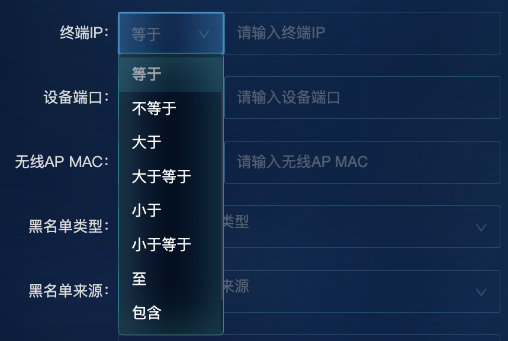

大佬不愧是大佬，三年前写的通用组件我们到现在都还在用，扒拉一下，好好学习学习。
在管理端，经常需要输入 ip/MAC 地址作为搜索条件进行搜索，如果在每个业务组件中都进行重复的格式判别和转换，将非常繁琐。因此，封装可复用的输入类型组件就非常必要了。
主要的类型有：
- 普通输入
- ipv4/ipv6 地址输入框
- mac 地址输入框
- 数字范围输入框
- 树选择器
- 含匹配规则的输入
- ipv4/ipv6：等于、不等于、大于等于、小于、小于等于、至、包含
- mac：等于、不等于、包含
- 设备端口：等于、不等于、包含、正则
1 ipv4 格式输入框
ipv4 格式输入框：
1.1 使用方法
调用组件：
1
2
3
4
5
6
7
8
9
| <app-ipv4-input
style="width: 100%"
[value]="params.value"
[key]="params.il8n"
(inputChange)="params.value = $event"
(ipCheckResult)="xxx"
[forAdvanceSearch]="true"
></app-ipv4-input>
|
1.2 组件属性方法
自定义 input 组件，应该能够实现 input 组件的基本方法，并且支持在 form 表单中使用。
html 属性：
| 参数名称 |
含义 |
默认值/绑定值 |
| [placeholder] |
input 占位文本 |
根据 forAdvanceSearch 判断 |
| [(ngModel)] |
input 双向绑定值 |
组件属性 showipValue |
| [disabled] |
input 是否禁用 |
disabled |
| [class.error] |
是否显示.error 样式 |
组件属性 formateError |
| [class.ok] |
是否显示.ok 样式（为空） |
组件属性 formateError 取反 |
| (blur) |
input 失去焦点时，触发的事件 |
keyUp() |
| (keydown) |
input 在按下按键时触发的事件 |
onKeyDown($event) |
blur 和 keydown 是原生 input 的事件，继承于 Element 类，Element 是最通用的基类，Document 中所有元素对象（即表示元素的对象）都继承于它。它具有各种元素公共的方法和属性。更具体的类则继承于 Element。
例如，HTMLElement 接口是所有 HTML 元素的基本接口。同样，SVGElement 接口是所有 SVG 元素的基本接口，而 MathMLElement 接口则是 MathML 元素的基础接口。大多数功能是在这个类的更深层级的接口中被进一步制定的。
ts 属性：
| 参数名称 |
装饰器/类型 |
含义 |
默认值 |
| forAdvanceSearch |
@Input() |
是否为高级搜索（决定了 placehodler 展示的内容） |
|
| key |
@Input() |
组件的 key 值，并在 placeholder 内显示 |
‘input’ |
| disabled |
@Input() |
是否禁用 |
false |
| openCheck |
@Input() |
是否开启 ip 校验 |
false |
| placeholder |
@Input() |
占位文本 |
‘请输入’ |
| nzParser |
@Input() |
格式转换 |
value=>value |
| formatError |
@Input() |
格式错误，用于显示错误格式校验 |
false |
| nzParser |
@Input() |
格式转换 |
value=>value |
| inputChange |
@Output() |
input 内值发生变化 |
new Eventemitter() |
| checkResult |
@Output() |
ip 校验结果 |
new EventEmitter() |
| ipCheckResult |
@Output() |
ip 校验结果 |
new EventEmitter() |
⚠️ 注意 ： checkResult 是在 input 绑定值发生变化时触发，ipCheckResult 是在 input 失去焦点时触发。在使用组件时，checkResult 和 ipcheckResult 都能对输入的 ip 地址进行校验，监听 checkResult 同步更改表单值，监听 ipcheckResult 可以在输入结束失去焦点时对 ip 进行额外判断（比如判别是否在某一可用 ip 段内）。
1
2
3
4
5
6
7
8
9
10
11
12
| <input
[placeholder]="forAdvanceSearch ? ('input' | translate) + (placeholder | translate) : (placeholder | translate)"
#inputElement
nz-input
[(ngModel)]="showipValue"
[disabled]="disabled"
[class.error]="formateError"
[class.ok]="!formateError"
(ngModelChange)="ngModelChangeValue($event)"
(blur)="keyUp()"
(keydown)="onKeyDown($event)"
/>
|
1.3 格式校验及转换
格式转换
目标：将”123123123”转换成“123.123.123”
实现过程
- 判断上一个操作的按键是否为清除键”Backspace”，如果是则跳过后续操作。
- 去除空格
- 中文标点转换为英文标点，”。”=>”.”
- 标点去重
- 去除非数字字符
- 格式转换（若未输入”.”，则自动用”.”拼接）
关键代码
1
2
3
4
5
6
7
8
9
10
11
12
13
14
15
16
17
18
19
20
21
22
23
24
25
26
27
28
29
30
31
32
33
34
35
36
37
|
ngModelChangeValue(value:string){
if(this.preEvent && this.preEvent === 'Backspace'){
this.inputChange.emit(this.value)
return
}
conste temp =
value.trim()
.replace('/。/g','.')
.replace('/(\.)(\1*)/g')
.replace（'/^\d\./g',''）
const ips:string[] = temp.split('.').filter((v,index) => {
return index <= 3;
})
const result = ''
for (let k = 0 ; k < ips.length ; k++){
conste te = ips[k].substr(3)
for (let k = 0; k < ips.length; k++){
const te = ips[k].substring(0, 3)
if (k < ips.length -1 || (te.length ===3 && k!==3)) {
result += (te +'.')
} else {
result += te
}
}
}
this.inputElement.nativeElement.value = reault;
this.showipValue = result;
this.inputChange.emit(this.value)
}
|
2 ipv4 格式范围选择输入框

ts 属性：
| 参数名称 |
装饰器/类型 |
含义 |
默认值 |
| inputModel |
@Input() |
绑定模型 |
|
| operatorMap |
@Input() |
操作下拉列表 |
|
| ipv4ValueEmit |
@Output() |
参数值发生变化时触发 |
|
2.1 使用方法
1
2
3
4
5
6
| <app-ipv4-range
[operatorMap]="operatorMap"
[inputModel]="params"
class="width-100"
(ipv4ValueEmit)="paramValueChange($event, ci, pi)"
></app-ipv4-range>
|
在 paramValueChange 中，将组件内容更新至表单项。
相关的下拉框配置、提交表格前的字符串拼接，均在调用的组件中实现。
2.1 关键代码
模板内容
1
2
3
4
5
6
7
8
9
10
11
12
13
14
15
16
17
18
19
20
21
22
23
24
25
26
27
28
29
30
31
32
33
34
35
36
37
38
39
40
41
42
43
44
45
46
47
48
49
50
51
52
53
54
55
56
57
58
59
60
61
62
63
64
65
66
67
68
69
70
71
72
73
74
75
76
77
78
79
80
| <div nz-row class="div-vertical-middle">
<div class="operate-cond">
<nz-select
[(ngModel)]="inputModel.operator"
(ngModelChange)="valueChange($event, null)"
>
<nz-option
*ngFor="let op of operatorMap"
[nzLabel]="op.name"
[nzValue]="op.value"
></nz-option>
</nz-select>
</div>
<ng-container [ngSwitch]="inputModel.operator">
<div *ngSwitchCase="'至'" class="div-vertical-middle match-expr-cond">
<div nz-col nzSpan="11">
<app-ipv4-input
style="float: left"
class="width-100"
[key]="inputModel.il8n"
[value]="inputModel.valueFrom"
[forAdvanceSearch]="true"
(inputChange)="valueChange($event, 'valueFrom')"
></app-ipv4-input>
</div>
<div nz-col nzSpan="2" style="text-align: center; line-height: 32px">
<label class="text-white">至</label>
</div>
<div nz-col nzSpan="11">
<app-ipv4-input
style="float: left"
class="width-100"
[key]="inputModel.il8n"
[value]="inputModel.valueTo"
[forAdvanceSearch]="true"
(inputChange)="valueChange($event, 'valueTo')"
></app-ipv4-input>
</div>
</div>
<div *ngSwitchCase="'in'" class="match-expr-cond">
<input
nz-input
class="width-100"
placeholder="{{ 'input' | translate }}{{ inputModel.il8n | translate }}"
[(ngModel)]="inputModel.value"
/>
</div>
<div *ngSwitchCase="'nin'" class="match-expr-cond">
<input
nz-input
class="width-100"
placeholder="{{ 'input' | translate }}{{ inputModel.il8n | translate }}"
[(ngModel)]="inputModel.value"
/>
</div>
<div *ngSwitchCase="'matches'" class="match-expr-cond">
<input
nz-input
class="width-100"
placeholder="{{ 'input' | translate }}{{ inputModel.il8n | translate }}"
[(ngModel)]="inputModel.value"
/>
</div>
<div *ngSwitchDefault class="match-expr-cond">
<app-ipv4-input
style="width: 100%"
*ngIf="inputModel.operator !== '至'"
[value]="inputModel.value"
[key]="inputModel.il8n"
[forAdvanceSearch]="true"
(inputChange)="valueChange($event, 'value')"
></app-ipv4-input>
</div>
</ng-container>
</div>
|
ts 关键代码
1
2
3
4
5
6
7
8
9
10
|
valueChange(event, type) {
if (type) {
if (type === 'value') this.inputModel.value = event;
if (type === 'valueFrom') this.inputModel.valueFrom = event;
if (type === 'valueTo') this.inputModel.valueTo = event;
}
this.ipv4ValueEmit.emit(this.inputModel);
}
|
难点：
- 实现可与 form 表单绑定的 input 业务组件，需要能够实现格式校验和格式转换。